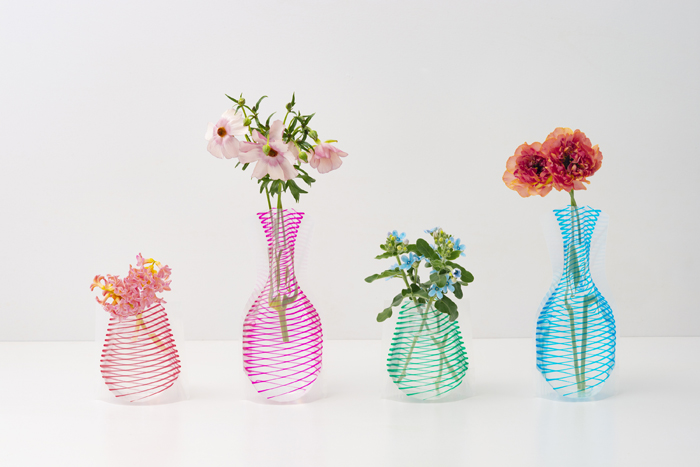

買ったらまずすること
花束はお花の鮮度を保つため、すぐに次のお手入れを行ってください。
- ラッピングや保水材を外してください。（保水材は、ジェル状のもの、紙状のものなどがあります。）
- 茎を洗い流し"水切り"を行います。
- "水切り"とは、水を張ったバケツなどの中で、茎の先端を1cmほど切ることです。その際、斜めに切ると切り口の面積が大きくなり、お水の吸い上げがよくなります。
お好みの花器にいけてお楽しみ下さい。
- 飾る場所
- 日の当たる場所やエアコンの風が直接当たる場所はさけて飾りましょう。
生花は乾燥を嫌います。 - お手入れ
- お花は咲き終わった順番に摘んでください。 咲き終わったお花をそのままにしておくと雑菌が発生して他のお花のためによくありません。
- 水替え
- お花にとって生命の源でもあるお水は毎日取り替えてください。さらに、お花を長持ちさせる次のポイントを実践しましょう。
- ポイント１
- 花器や花茎を水洗いしてぬめりを取り除く。
- ポイント２
- 茎の先端を水切りし直す。
- ポイント３
- 花器にいける時は葉の部分がお水に浸からないよう、下の方の葉を取り除く。